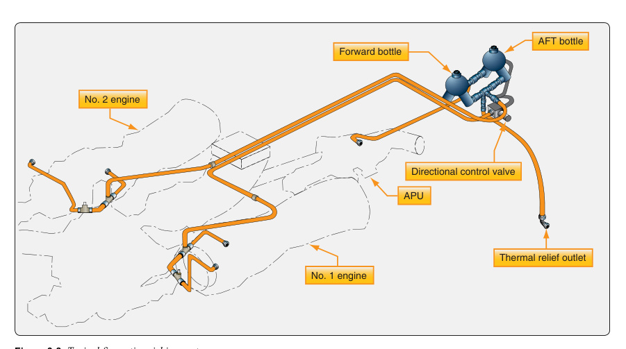
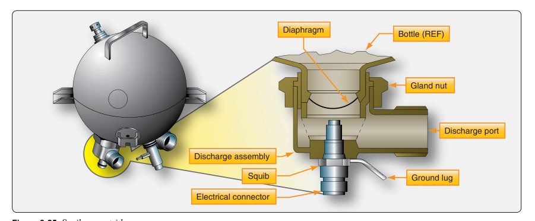

화재방지 계통(Fire Protection System)은 화재·과열을 감지하고 소화하는 두 기능으로 구성된다.
화재의 3요소(Fire triangle): 연료(Fuel)·산소(Oxygen)·열(Heat) — 하나만 제거해도 소화된다.
엔진룸은 가연성 유체와 고온이 공존하는 고위험 구역(Fire zone)이다.

- A. B급 화재.Class B fire.
- B. A급 화재.Class A fire.
- C. C급 화재.Class C fire.
- A. 미세 분무로 뿌리면 가장 효과적이다.is most effective if sprayed in a fine mist.
- B. 화재를 더 격렬하게 만들고 폭발을 유발할 수 있다.will cause the fire to burn more violently and can cause explosions.
- C. 효과가 없다.has no effect.
화재의 3요소와 종류
Fire Triangle & Classes of Fire화재가 일어나려면 세 가지가 동시에 있어야 한다: 연료(fuel), 산소(oxygen), 열(heat). 이 셋 중 하나라도 제거하면 불이 꺼진다. 소화계통은 엔진 주변의 산소를 연소 불가 수준으로 희석하거나 온도를 발화점 이하로 낮춘다.Fire requires three things at once: fuel, oxygen, and heat. Removing any one extinguishes the fire. Extinguishing systems dilute the oxygen around the engine below the level supporting combustion, or lower the temperature below the ignition point.
화재 등급은 A급(목재·종이 등 일반 가연물), B급(연료·오일 등 가연성 액체), C급(통전 전기), D급(금속)으로 나뉜다. 등급에 맞는 소화제를 써야 하며, 잘못된 소화제는 위험을 키운다.Fire classes are A (ordinary combustibles like wood/paper), B (flammable liquids like fuel/oil), C (energized electrical), and D (metals). The agent must match the class; the wrong agent increases danger.

- A. B급 화재.Class B fire.
- B. D급 화재.Class D fire.
- C. C급 화재.Class C fire.
서멀스위치(Thermal Switch)는 설정온도에서 접점이 닫혀 경고등을 켠다.
여러 스위치가 병렬 연결 — 한 곳만 고온이어도 경고.
구조 단순하나 특정 지점만 감지(점 감지)하는 한계가 있다.
열전대(Thermocouple)는 온도 상승률(Rate of rise)을 감지한다 — 급격한 화재에 반응.
서로 다른 두 금속의 접합부 온도차로 전압을 생성(제벡 효과).
엔진이 서서히 과열될 때는 작동 안 함 — 급상승 화재 전용.
연속루프(Continuous-Loop)는 엔진 둘레를 감싼 센서로 전 구간을 감시한다 — 점이 아닌 선 감지.
방식: Kidde(저항변화), Fenwal(공융염), 가압식(Pneumatic/Lindberg).
현대 항공기의 주류 화재감지 방식 — 넓은 범위·높은 신뢰성.
![continuous_loop]()
감지기 센서는 엔진 화재구역에 장착되어 온도/화염을 감지한다.
센서 종류: 온도감지(Thermal), 화염감지(Flame/광학), 연기감지(Smoke, APU·화물칸).
정기 점검: 센서 손상·배선·절연저항 확인.

- A. 연기 감지기(Smoke detectors).Smoke detectors.
- B. 온도상승률 감지기.Rate-of-temperature-rise detectors.
- C. 화염 감지기(Flame detectors).Flame detectors.
- A. 수동으로 재설정해야 한다.must be manually reset.
- B. 자동으로 재설정된다.automatically resets.
- C. 감지 부품을 교체해야 한다.sensing component must be replaced.
소화계통(Extinguishing System)은 화재 감지 시 소화제를 분사한다.
소화제(Agent): 할론(Halon 1301)이 전통적, 최근 친환경 대체제로 전환 중.
구성: 소화병(Bottle), 스큅(Squib, 전기 점화 방출밸브), 분사노즐, 방출지시기.

소화제의 종류
Fire-Extinguishing Agents가장 널리 쓰이는 소화제는 할로겐화 탄화수소(halogenated hydrocarbons)다. 탄화수소의 수소 원자를 불소·염소·브롬 같은 할로겐 원소로 치환한 것으로, 연소의 화학적 연쇄반응을 차단해 불을 끈다. 과거의 사염화탄소(carbon tet)는 화염 온도에서 맹독성 포스겐(phosgene)으로 변하고 인체에 누적 독성이 있어 더 이상 쓰지 않는다.The most widely used agents are halogenated hydrocarbons — hydrocarbons whose hydrogen atoms are replaced with halogens like fluorine, chlorine, or bromine. They interrupt the chemical chain reaction of combustion. The older carbon tetrachloride (carbon tet) converts to toxic phosgene at flame temperatures and has a cumulative toxic effect, so it is no longer used.
가장 많이 쓰인 두 할론은 Halon 1301(CBrF3, 브로모트리플루오로메탄)과 Halon 1211(CBrClF2, 브로모클로로디플루오로메탄)이다. 둘 다 독성이 매우 낮고(1301이 가장 낮음), 비부식성에 잔류물이 없어 청소가 필요 없다. Halon 1301은 별도 가압제가 필요 없지만 Halon 1211은 질소나 1301로 가압한다.The two most common halons are Halon 1301 (CBrF3, bromotrifluoromethane) and Halon 1211 (CBrClF2, bromochlorodifluoromethane). Both have very low toxicity (1301 is the lowest), are noncorrosive, and leave no residue requiring cleanup. Halon 1301 needs no separate pressurizing agent, but Halon 1211 is pressurized with nitrogen or 1301.
건식화학(dry chemical) 소화제는 압축질소로 중탄산나트륨·중탄산칼륨 분말을 분사한다. 효과적이지만 비행 중 조종실에서는 분말이 시야를 가리므로 절대 사용하면 안 된다. CO2는 통전 전기화재에 쓸 때 방출 혼(horn)이 비금속이어야 한다.Dry chemical agents use compressed nitrogen to expel sodium- or potassium-bicarbonate powder. Effective, but never use in a cockpit in flight as the powder obscures vision. When CO2 is used on an electrical fire, the discharge horn must be nonmetallic.

- A. 다이브로모다이플루오로메탄(Halon 1202).Dibromodifluoromethane (Halon 1202).
- B. 브로모클로로다이플루오로메탄(Halon 1211).Bromochlorodifluoromethane (Halon 1211).
- C. 브로모트라이플루오로메탄(Halon 1301).Bromotrifluoromethane (Halon 1301).
- A. 사염화탄소(carbon tetrachloride).carbon tetrachloride.
- B. 이산화탄소(carbon dioxide).carbon dioxide.
- C. 메틸 브로마이드.methyl bromide.
장착형 소화계통 (CO2·HRD)
Installed Systems (CO2 & HRD)항공기에는 두 가지 장착형 소화계통이 쓰인다: 구형기 엔진실의 CO2 계통과, 현대 제트기 대부분의 고속방출(HRD) 계통이다. CO2 계통은 강철 병에 담겨 저온에서도 잘 방출되도록 질소로 가압하며, T자 핸들로 소화할 엔진을 선택해 천공 알루미늄 배관으로 방출한다. 큰 계통은 두 번째 병으로 재방출할 수 있다.Aircraft use two installed systems: CO2 systems in older engine compartments, and high-rate-discharge (HRD) systems on most modern jets. CO2 is carried in steel bottles, often pressurized with nitrogen for low-temperature discharge, and released through a perforated aluminum tube into the engine selected by a T-handle. Large systems have a second bottle for re-discharge.
CO2 계통에는 적색·황색 디스크 2개가 동체 외부에 있다. 조종사가 정상 방출하면 황색 디스크가 터지고, 병 주변이 위험할 만큼 과열되면 적색 디스크가 터지며 자동 방출된다. 외부 점검 시 이 디스크로 계통 상태를 알 수 있다.CO2 systems have two indicator disks (red and yellow) on the fuselage exterior. Normal discharge blows the yellow disk; thermal (overheat) discharge blows the red disk. The flight crew can read system condition from these disks during walk-around inspection.
HRD 계통은 구형·원통형 병에 Halon 1211/1301을 담고 압축질소로 가압해 최단시간에 분산시킨다. 병은 파괴성(frangible) 디스크로 밀봉되며, 전기 신호로 점화된 카트리지가 구동하는 커터가 디스크를 뚫어 방출한다. 손휴대 소화기의 충전 상태는 CO2는 무게로, 할론은 내장 압력게이지로 확인한다.HRD systems use spherical or cylindrical bottles of Halon 1211/1301 with compressed nitrogen for rapid dispersal. The bottle is sealed with a frangible disk ruptured by a cutter driven by an electrically ignited cartridge. A hand-held extinguisher's charge is checked by weight for CO2 and by a built-in pressure gage for Halon.

정기 점검: 센서·배선 상태, 경고등 작동 시험(Test circuit).
고장탐구: 단선(Open)·단락(Short)·접지불량으로 인한 오경보/무경보 진단.
⚠️ 오경보(False alarm)와 실제 화재를 구분하는 점검 절차가 중요하다.
📌 화재 경고 시험 스위치 점검과 고장탐구 — 조종석 화재 시험(press-to-test) 스위치를 누르면 감지 루프의 도통과 경보 회로가 시험되어 화재 경고등, 화재 핸들 등, 경고음(벨)이 함께 작동해야 합니다. 일부만 작동하면 해당 등·회로를, 전혀 작동하지 않으면 전원·제어 장치·루프 끊어짐을 의심합니다. 반대로 시험 없이 경고가 켜지는 오경보는 커넥터 습기, 꺾이거나 눌린 루프, 구조에 닿은 루프가 흔한 원인입니다. 루프는 매뉴얼의 저항·절연 저항 값과 비교하고, 구간을 나눠 원인을 좁힙니다.📌 Checking the fire warning press-to-test and troubleshooting faults — Pressing the cockpit fire test (press-to-test) switch tests loop continuity and the alarm circuits, and the fire warning light, fire handle light, and aural alarm (bell) should all operate. If only some operate, suspect those lights or circuits; if nothing operates, suspect power, the control unit, or an open loop. Conversely, false warnings without a test are commonly caused by moisture in connectors, kinked or crushed loops, or loops touching structure. Compare the loop with the manual's resistance and insulation resistance values, and split it into sections to narrow the cause.

- A. 커넥터 습기나 꺾이거나 눌린 감지 루프Moisture in a connector or a kinked or pinched sensing loop
- B. 소화 용기 압력 저하Low extinguisher bottle pressure
- C. 방출 디스크 소실A missing discharge disc
소화병 무게·압력 점검으로 소화제 충전 상태 확인(누설 감시).
⚠️ 스큅(Squib)은 폭발성 — 취급 시 전기 안전조치·핀 장착 필수.
방출지시기(Discharge indicator): 황색=정상, 적색=방출됨.
📌 방출 카트리지(squib) 취급과 방출 회로 정비 — 소화 용기의 카트리지(squib)는 전기 신호로 터지는 화약 장치로, 터지면 다이어프램을 뚫어 소화제를 방출합니다. 취급할 때는 정전기를 피하고, 떨어뜨리지 않으며, 커넥터에는 단락 캡을 씌우고, 출구가 사람을 향하지 않게 합니다. 회로 정비는 전원을 끄고 카트리지 커넥터를 분리한 뒤 하며, 회로 시험은 조종석의 카트리지 시험 스위치나 승인된 저전류 시험기로만 합니다. 일반 저항계는 전류로 카트리지를 터뜨릴 수 있어 쓰지 않습니다. 카트리지는 제조일과 사용 기한을 확인해 지난 것은 교환하고, 본체에 손상·부식이 없는지 봅니다.📌 Handling discharge cartridges (squibs) and maintaining discharge circuits — An extinguisher container's cartridge (squib) is an explosive device fired by an electrical signal; when it fires it ruptures a diaphragm and releases the agent. When handling cartridges, avoid static, never drop them, install shorting caps on the connectors, and do not point the outlet at anyone. Work on the circuit only with power off and the cartridge connector disconnected, and test the circuit only with the cockpit cartridge test switch or an approved low-current tester; an ordinary ohmmeter can fire the cartridge with its current and is not used. Check each cartridge's manufacture date and service life, replace expired ones, and inspect the body for damage and corrosion.
📌 방출 지시 디스크·용기 수압 시험 확인과 소화 계통 고장탐구 — 기체 외부의 방출 지시 디스크(blowout plug)는 용기가 과열로 열 방출되면 붉은 디스크가, 정상(조종사 조작) 방출되면 노란 디스크가 떨어져 나가므로, 외부 점검 때 디스크가 제자리에 있는지 봅니다. 용기는 압력계 지시를 온도-압력 표와 비교하고 무게를 새겨진 값과 비교해 충전량을 판단하며, DOT 표시와 수압 시험일이 정해진 주기 안인지 확인합니다. 고장탐구는 카트리지 점검등이 켜지지 않으면 전구·회로·카트리지 순, 압력이 낮으면 누설(비눗물)·온도 보정·지시계 순으로 확인하고, 방출 라인의 막힘과 체크 밸브 작동도 봅니다.📌 Checking discharge indicator disks and bottle hydrostatic test dates, and troubleshooting extinguishing systems — External discharge indicator disks (blowout plugs) on the aircraft show a missing red disk when a bottle has discharged thermally from overheating and a missing yellow disk after a normal (pilot-initiated) discharge, so check during the walkaround that the disks are in place. Judge a bottle's charge by comparing its gauge with the temperature-pressure chart and its weight with the stamped value, and confirm the DOT markings and that the hydrostatic test date is within the required interval. In troubleshooting, if a cartridge check light does not come on, check the bulb, circuit, and cartridge in turn; if pressure is low, check for leaks (soapy water), temperature correction, and the gauge; and check discharge lines for blockage and check valves for operation.

![Figure 2]()
- A. 최소 326, 최대 415.326 minimum and 415 maximum.
- B. 최소 330, 최대 419.330 minimum and 419 maximum.
- C. 최소 338, 최대 424.338 minimum and 424 maximum.
- A. 수명 한정 유닛(life-dated unit).a life-dated unit.
- B. 수명 한정이 아닌 유닛.not a life-dated unit.
- C. 기계적으로 발화됨.mechanically fired.
- A. 빨간 디스크가 없으면 소화 시스템이 충전되어 사용 준비됨을 나타낸다.When the red indicator disc is missing, it indicates the fire extinguishing system is charged and ready for use.
- B. 노란 디스크가 없으면 소화 시스템이 정상 방출되었음을 나타낸다.When the yellow indicator disc is missing, it indicates the fire extinguishing system has been normally discharged.
- C. 초록 디스크가 없으면 소화 시스템이 정상 방출되었을 수 있음을 나타낸다.When the green indicator disc is missing, it indicates that the fire extinguishing system may have been normally discharged.
- A. 정확도가 너무 높아서It is too accurate
- B. 측정 전류로 카트리지가 터질 수 있다Its current could fire the cartridge
- C. 회로가 교류여서The circuit is AC
- A. 조종사가 정상 방출했다The crew discharged it normally
- B. 정상 상태이다It is normal
- C. 용기가 과열로 열 방출되었다The bottle discharged due to overheat
대형기는 다중 화재구역(엔진·APU·화물칸)을 통합 감시한다.
B777: 이중루프(Dual-loop) 감지로 신뢰성 향상 — 오경보 방지.
조종석에서 화재경고·소화병 방출을 제어한다.

APU(Auxiliary Power Unit, 보조동력장치)도 독립 화재방지 계통을 갖춘다.
APU 화재 감지 시 자동 정지(Auto shutdown) + 소화제 방출.
지상·비행 중 무인 작동이 가능하도록 자동화되어 있다.
📌 보조 동력 장치(APU) — APU는 보통 동체 꼬리에 장착된 작은 가스터빈 엔진으로, 지상과 공중(기종에 따라)에서 주 엔진 시동용 블리드 공기, 객실 냉난방 공기, 그리고 발전기로 전기를 공급합니다. 일정 회전수(대개 100% 부근)로 운전하도록 전자 제어기가 연료를 조절하고, 과회전·과열·저유압·화재 같은 조건에서 자동 정지합니다. APU 구역은 화재 구역으로, 화재 감지와 소화 계통이 있고 지상에서는 외부(휠웰 근처) 화재 경고·정지 스위치가 있습니다. 정비는 오일량, 흡입구·배기 FOD, 시동기, 점화, 블리드 밸브, 운전 시간·시동 횟수 기록을 다룹니다.📌 Auxiliary power units (APUs) — An APU is a small gas turbine, usually in the tail cone, that supplies bleed air for main engine starting and cabin heating and cooling, and electrical power through its generator, on the ground and (depending on type) in flight. An electronic controller meters fuel to run it at a constant speed (usually near 100%) and shuts it down automatically for conditions such as overspeed, overtemperature, low oil pressure, or fire. The APU compartment is a fire zone with fire detection and extinguishing, and on the ground there is an external fire warning and shutdown switch (often near the wheel well). Maintenance covers oil quantity, inlet and exhaust FOD, the starter, ignition, bleed valves, and records of operating hours and starts.

- A. 주 엔진 추력Main engine thrust
- B. 주 엔진 시동용 블리드 공기Bleed air for main engine start
- C. 발전기 전력Generator electrical power
엔진 화재 감지 📙 Jeppesen 참고
Engine Fire Detection화재감지는 세 방식입니다. 서멀스위치(thermal switch)는 설정온도에서 회로를 닫고, 열전대(thermocouple)식은 급격한 온도상승률(rate-of-rise)을 감지하며, 연속루프(continuous loop, Kidde·Fenwal)는 관 전 길이에서 과열·화재를 감지합니다. 대형기는 연속루프를 이중으로 써(양쪽 다 이상일 때만 경보) 오경보를 줄입니다.Fire detection uses three methods. A thermal switch closes at a set temperature, a thermocouple system senses a rapid rate of temperature rise, and a continuous loop (Kidde, Fenwal) senses overheat/fire along the whole tube length. Large aircraft use dual continuous loops (alarming only when both trip) to reduce false warnings.
감지계통은 시험스위치로 연속성·경보동작을 점검하며, 오경보(감지요소 손상·배선 합선·습기)와 미작동(단선·경고장치 고장)을 구분해 정비합니다. 감지요소는 규정 지지·경로로 설치해 진동 마모를 막습니다.The system is checked with a test switch for continuity and alarm operation, distinguishing false warnings (damaged element, shorted wiring, moisture) from no-warning faults (open element, failed annunciator) for repair. The sensing element is installed with specified supports and routing to prevent vibration wear.
- A. 연속 루프 시스템.continuous-loop system.
- B. 열전대 시스템.thermocouple system.
- C. 열스위치 시스템.thermal switch system.
화재 감지 계통의 요건과 서멀 스위치·서모커플 방식 심화 📙 Jeppesen 정독
Fire Detection Requirements, Thermal Switch, and Thermocouple Systems화재 방지 계통은 화재 감지와 소화라는 두 가지 별개의 기능을 수행합니다. 화재 감지 계통의 주 목적은 화재 발생 시 경고 장치를 작동시키는 것입니다. 이상적 화재 감지 계통은 다음을 충족해야 합니다: 거짓 경고를 일으키지 않고, 화재의 신속한 지시와 정확한 위치를 제공하며, 화재가 존재하는 동안 연속적 지시를 제공하고, 화재가 소화됐다는 정확한 지시를 제공하며, 소화된 화재가 재점화됐다는 정확한 지시를 제공하고, 조종석에서 계통을 시험할 수단을 갖추며, 오일·연료·유압유·물·진동·극한 온도·정비 취급에 견디는 감지기를 갖추고, 감지기가 가볍고 쉽게 장착되며, 인버터 없이 항공기 전기 계통으로 구동되고, 무장 시 최소 전류만 필요하며, 조종석 등과 가청 경보를 모두 작동시키고, 각 엔진마다 별도 감지 계통을 제공해야 합니다.A fire protection system performs two separate functions: detection and extinguishment. A detection system's primary purpose is to activate a warning if a fire occurs. An ideal system should: cause no false warning; give rapid indication and accurate location; provide continuous indication while a fire exists; accurately indicate when a fire is extinguished; accurately indicate reignition; be testable from the cockpit; have detectors resisting oil, fuel, hydraulic fluid, water, vibration, extreme temperatures, and handling; have lightweight, easily mounted detectors; use aircraft power without an inverter; require minimal current when armed; activate both a cockpit light and audible alarm; and provide a separate system for each engine.
오늘날 여러 화재 감지 계통이 항공에 쓰입니다. 대부분의 계통은 감지기 주변 공기가 미리 정한 온도에 도달하면 경보를 작동시키는 하나 이상의 감지기로 구성됩니다. 이 때문에 화재 감지기를 과열 감지기(overheat detector)라 부르기도 합니다. 엔진 화재 감지 계통에는 두 범주가 있습니다: 스팟 감지 계통과 연속 루프 계통입니다. 스팟 감지 계통에서는 개별 화재 감지기(스위치)가 화재를 감지하며, 화재 경고가 감지기와 같은 위치에 화재가 존재할 때만 울리므로 감지기는 화재 발생 가능성이 가장 높은 곳에 배치됩니다. 연속 루프 계통은 스팟 감지 계통과 같은 기본 원리로 작동하되 긴 튜브 형태의 단일 스위치로 화재를 감지합니다. 소구경 튜브가 엔진 나셀이나 테일 콘 둘레를 완전히 감싸도록 배치되므로 스팟형보다 완전한 커버리지를 제공합니다.Many detection systems are used today; most consist of one or more detectors that activate an alarm when surrounding air reaches a predetermined temperature—so fire detectors are sometimes called overheat detectors. There are two categories: spot-detection and continuous-loop. In spot detection, individual detectors (switches) detect a fire, and a warning sounds only when a fire exists at the detector's location, so detectors go where fire is most likely. A continuous-loop system works on the same principle but uses a single switch in the form of a long tube; because the small-diameter tube routes completely around the nacelle or tail cone, it gives more complete coverage than a spot type.
서멀 스위치 화재 감지 계통은 다수의 열 작동 스위치를 쓰는 스팟 감지 계통입니다. 각 스위치(센서)는 미리 정한 온도로 가열되면 닫히는 바이메탈 서멀 스위치로 구성됩니다. 서멀 스위치 계통에는 단일 루프와 이중 루프 두 기본 형식이 있습니다. Fenwal 단일 루프 계통에서는 모든 스위치가 병렬로 배선되고 경고등과는 직렬입니다. 서멀 스위치 센서는 스테인리스강 하우징 안에 장착되며, 화재 시 하우징이 가열돼 길어지면서 접점이 닫힙니다. 서멀 스위치를 조정하려면 하우징을 지정 온도로 가열하고 접점이 막 닫힐 때까지 장력 나사를 조정합니다.A thermal switch system is a spot-detection system using many heat-activated switches, each a bimetallic thermal switch that closes at a preset temperature. There are two types—single-loop and double-loop; in the Fenwal single-loop, all switches are wired in parallel and in series with the warning light. The sensor mounts inside a stainless steel housing that, in a fire, heats and elongates to close the contacts; to adjust it, heat the housing to the specified temperature and adjust the tension screw until the contacts just close.
서모커플 화재 감지 계통에서는 감지기가 미리 정한 온도가 아니라 온도 상승률(rate of temperature rise)에 의해 작동합니다. 즉 주변 공기 온도가 너무 빠르게 상승하면 서모커플 감지기가 화재 경고를 개시합니다. 전형적 서모커플 계통에서는 액티브 서모커플(active thermocouple)이라 불리는 하나 이상의 서모커플이 엔진 주위 화재 구역에 놓이고, 레퍼런스 서모커플(reference thermocouple)이라 불리는 별도 서모커플이 두 절연 블록 사이의 정체된 공기 공간에 위치합니다. 정상 작동 중에는 레퍼런스와 액티브 서모커플 주변 공기 온도가 비교적 고르므로 경고등을 작동시킬 전류가 생성되지 않습니다. 그러나 화재가 발생하면 액티브 서모커플 주변 공기 온도가 레퍼런스 서모커플 주변보다 훨씬 빠르게 상승하고, 이 온도 차가 서모커플 회로에 전류를 생성해 경고등과 혼을 작동시킵니다.In a thermocouple system, detectors are triggered by the rate of temperature rise rather than a preset temperature: if surrounding air rises too rapidly, a thermocouple detector initiates a warning. One or more active thermocouples sit in fire zones around the engine, while a separate reference thermocouple sits in dead air between two insulated blocks. Normally, air temperature around both is relatively even and no current is produced; but in a fire, air around the active thermocouples rises much faster than around the reference, and the differential produces current that activates a warning light and horn.
대부분의 서모커플 계통에서 감도 릴레이, 슬레이브 릴레이, 열 시험 유닛이 릴레이 박스에 담깁니다. 전형적 릴레이 박스는 잠재적 화재 구역마다 하나씩 최대 8개의 동일 회로를 담을 수 있습니다. 서모커플이 릴레이 작동을 제어하고 릴레이가 경고등을 제어합니다. 시험 회로는 감지기 회로에 배선된 시험 서모커플과 소형 전기 히터를 씁니다. 감도 릴레이를 닫고 경고 계통을 작동시키는 데 필요한 전류는 약 4밀리암페어에 불과합니다. 특정 감지기 회로의 총 서모커플 수는 화재 구역 크기와 총 회로 저항에 달려 있으며, 회로 저항은 보통 5옴 미만입니다. 대부분의 서모커플 회로는 슬레이브 릴레이 단자에 저항기를 연결하는데, 이 저항기는 코일을 통한 전류가 멈추고 자기장이 붕괴할 때 생기는 자기 유도 전압을 흡수합니다. 이 전압이 흡수되지 않으면 감도 릴레이 접점에 아크가 생겨 접점이 타거나 용접될 수 있습니다.In most thermocouple systems, a sensitive relay, slave relay, and thermal test unit are in a relay box that can hold up to eight identical circuits, one per potential fire zone; thermocouples control the relays and relays control the warning lights. The test circuit uses a test thermocouple and a small heater, and only about 4 milliamperes is needed to close the sensitive relay and activate the warning. The total number of thermocouples depends on the zone size and total circuit resistance, typically under five ohms. Most circuits connect a resistor across the slave-relay terminals to absorb the self-induced voltage when current stops and the field collapses; without absorption, arcing across the sensitive-relay contacts could burn or weld them.


- A. 열전대(Thermocouple).Thermocouple.
- B. 열스위치(Thermal switch).Thermal switch.
- C. 린드버그(Lindberg) 연속 요소.Lindberg continuous element.
- A. 화재 감지 제어 유닛.Fire detection control unit.
- B. 열전대 감지기.Thermocouple detector.
- C. 키드(Kidde) 연속 루프.Kidde continuous-loop.
- A. 스팟 감지기(Spot detector).Spot detector.
- B. 과열 감지기(Overheat detector).Overheat detector.
- C. 온도상승률 감지기.Rate-of-temperature-rise detector.
- A. 주 시스템과 백업 시스템 두 개의 독립 시스템과 동등한 설치를 제공하기 위해.To provide an installation that is equal to two separate systems: a primary system and a secondary, or back-up system.
- B. 오경보 없이 시스템에 이중 결함이 존재할 수 있도록.So that a double fault may exist in the system without sounding a false alarm.
- C. 오경보 없이 시스템에 단일 결함이 존재할 수 있도록.So that a single fault may exist in the system without sounding a false alarm.
- A. 열전대 시스템과 린드버그 시스템.The thermocouple system and the Lindberg system.
- B. 키드 시스템과 펜월 시스템.The Kidde system and the Fenwal system.
- C. 열전대 시스템과 펜월 시스템.The thermocouple system and the Fenwal system.
연속 루프 화재 감지: Fenwal·Kidde와 공압식(Lindberg·Systron-Donner) 심화 📙 Jeppesen 정독
Continuous-Loop Detection: Fenwal, Kidde, and Pneumatic SystemsFenwal은 서멀 스위치 감지 계통 외에 연속 루프형 계통도 생산하는데, 화재 구역 크기에 따라 길이가 1~15피트로 달라지는 단일 화재 감지 요소(과열 감지 요소)로 구성됩니다. 연속 루프 화재 감지 계통의 감지 요소는 단일 와이어 전극을 가진 유연한 소구경 인코넬(Inconel) 튜브입니다. 순수 니켈 전극은 전극과 도체를 절연하기 위해 세라믹 비드로 둘러싸입니다. 이 계통에서 비드는 온도에 따라 전기 저항이 변하는 유테틱 염(eutectic salt)으로 적셔집니다. 중심 도체가 인코넬 튜브 양 끝에서 돌출하고 여기에 전기 단자가 부착됩니다. 도체에 전류가 인가되고 외부 튜브는 항공기 구조에 접지됩니다. 정상 온도에서는 유테틱 염 코어 재료가 중심 도체와 튜브 사이 전류 흐름을 막습니다. 그러나 화재나 과열 상태가 발생하면 코어 저항이 떨어져 중심 도체와 접지 사이에 전류가 흘러 경보 회로를 여자합니다. Fenwal 계통은 자기 증폭기 컨트롤 유닛을 쓰는데, 컨트롤러가 감지 요소에 전력을 공급하고 튜브를 통해 접지로의 회로가 완성되면 경보를 울립니다.Besides thermal-switch systems, Fenwal makes a continuous-loop system with a single sensing (overheat) element 1 to 15 feet long depending on zone size. The element is a flexible small-diameter Inconel tube with a single-wire electrode; the pure-nickel electrode is surrounded by ceramic beads wetted with a eutectic salt whose resistance varies with temperature. The center conductor protrudes from each end with an electric terminal, current is applied to the conductor, and the outer tube grounds to the structure. At normal temperatures the eutectic salt prevents current between conductor and tube, but a fire or overheat drops core resistance so current flows between conductor and ground, energizing the alarm. The Fenwal system uses a magnetic-amplifier control unit that powers the element and sounds an alarm when the circuit to ground completes through the tube.
Kidde 계통은 또 다른 연속 루프 계통으로 단일 과열 감지 요소로 구성되며 센서 길이는 화재 구역 크기에 따라 달라집니다. 감지 요소는 두 개의 와이어 도체를 가진 강성의 미리 성형된 인코넬 튜브입니다. 도체는 두 전극을 서로 그리고 외부 케이싱으로부터 절연하기 위해 서미스터(thermistor, 열 저항) 재료에 매립됩니다. Fenwal 계통의 유테틱 염처럼 서미스터 재료의 전기 저항은 온도가 오르면 감소합니다. 한 와이어는 내부 접지로 기능해 양 끝에서 외부 튜브에 전기적으로 접지되고, 두 번째 와이어는 양극 리드입니다. 화재나 과열이 발생하면 서미스터 재료의 저항이 떨어져 두 와이어 사이에 전류가 흘러 경보를 작동시킵니다. 각 도체는 별도 회로 카드에 장착된 전자 컨트롤 유닛에 연결됩니다. 이중 컨트롤 유닛은 전체 감지 루프의 총 저항을 지속적으로 측정하는 것 외에 한쪽이 고장 나면 이중화를 제공합니다. 실제로 Fenwal과 Kidde 계통 모두 감지 요소가 작동 불능이어도 화재를 감지하는데, 다만 눌러서-시험(press-to-test) 회로는 작동하지 않습니다.The Kidde system is another continuous-loop type with a single overheat element whose length varies with zone size. The element is a rigid, pre-shaped Inconel tube with two wire conductors embedded in a thermistor material to insulate the electrodes from each other and the casing; like Fenwal's eutectic salt, the thermistor's resistance decreases as temperature rises. One wire is an internal ground, grounded to the outer tube at each end, and the second is a positive lead; a fire or overheat drops the thermistor resistance so current flows between the wires to activate the alarm. Each conductor connects to an electronic control unit on separate circuit cards, and the dual control unit constantly measures total loop resistance and provides redundancy if one side fails. In fact, both Fenwal and Kidde detect a fire even when an element is inoperative, though the press-to-test circuit won't function.
공압식 연속 루프 감지기(pneumatic continuous-loop detector)는 밀봉 튜브를 써서 전반적 과열 상태나 스팟 화재를 지시할 수 있습니다. 현대 항공기에 쓰이는 세 가지 주요 계통은 Lindberg 계통, Systron-Donner 계통, Meggitt 계통입니다. Lindberg 화재 감지 계통은 비활성 가스와 가스 일부를 흡수할 수 있는 이산(discrete) 재료로 채워진 스테인리스강 튜브로 구성됩니다. 재료가 흡수하는 가스량은 온도에 따라 달라집니다. 튜브 한쪽 끝은 리스폰더(responder)라는 공압 압력 스위치에 연결되는데, 리스폰더는 다이어프램과 접점 세트로 구성됩니다.Pneumatic continuous-loop detectors use a sealed tube to indicate a general overheat or a spot fire; the three main modern systems are Lindberg, Systron-Donner, and Meggitt. The Lindberg system is a stainless steel tube filled with an inert gas and a discrete material that absorbs some of the gas, the amount varying with temperature. One end connects to a pneumatic pressure switch called a responder, consisting of a diaphragm and contacts.
감지 요소 주변 온도가 화재나 과열로 상승하면 이산 재료도 가열돼 흡수된 가스 일부를 방출합니다. 가스가 방출되면 튜브 내 압력이 증가해 리스폰더 유닛의 다이어프램 스위치를 기계적으로 작동시킵니다. 스위치가 닫히면 경고등이 켜지고 경보 벨이 울립니다. Lindberg 계통은 가스 압력 원리로 작동하므로 공압 계통이라 불립니다. Lindberg 계통을 시험하려면 저전압 교류를 요소의 외부 케이싱에 보내 케이싱을 가열하는데, 이산 재료가 다이어프램 스위치 접점을 닫고 화재 경고를 개시할 만큼 충분한 가스를 방출할 때까지 가열합니다. 시험 스위치를 놓으면 감지 요소가 냉각돼 이산 재료가 가스를 재흡수하고, 가스 재흡수 후 다이어프램 스위치 접점이 열려 화재 경고가 멈춥니다.When temperature around the element rises from a fire or overheat, the discrete material heats and releases some absorbed gas; the released gas increases tube pressure and mechanically actuates the diaphragm switch in the responder. When it closes, the warning light illuminates and the bell sounds—because it works on gas pressure, it's a pneumatic system. To test it, low-voltage AC is sent through the element's outer casing to heat it until the discrete material releases enough gas to close the diaphragm-switch contacts and trigger a warning; releasing the test switch cools the element, the material reabsorbs the gas, and the contacts open to stop the warning.
Systron-Donner 계통의 헬륨 충전 스테인리스강 튜브는 감지 요소로 중심을 지나는 티타늄 와이어를 씁니다. 이 와이어는 일정량의 수소를 함유한 가스 흡수 재료입니다. 보호를 위해 와이어는 보통 비활성 금속 테이프로 감기거나 비활성 금속 튜브에 삽입됩니다. 센서 튜브 한쪽 끝은 다이어프램이 있는 리스폰더 조립체에 연결됩니다. 정상 작동에서는 헬륨 가스 압력이 리스폰더의 다이어프램에 작용해 회로를 열어둡니다. 평균(전반적) 온도가 상승하면 헬륨 압력이 증가하고, 국부적으로 매우 뜨거운 지점(스팟 화재)에서는 티타늄 와이어가 수소를 방출해 압력을 급증시킵니다. 어느 경우든 증가한 압력이 다이어프램을 움직여 경보 회로를 완성합니다.The Systron-Donner system's helium-filled stainless steel tube uses a titanium wire through its center as the sensing element—a gas-absorbing material containing hydrogen, usually wrapped in inert metal tape or inserted in an inert metal tube for protection; one end connects to a responder assembly with a diaphragm. Normally, helium gas pressure acts on the diaphragm to hold the circuit open. A rising average (overall) temperature increases helium pressure, while a localized very hot spot (spot fire) makes the titanium wire release hydrogen to spike the pressure; either way, the increased pressure moves the diaphragm to complete the alarm circuit.


- A. 키드(Kidde) 연속 루프 시스템.Kidde continuous-loop system.
- B. 린드버그(Lindberg) 연속 요소 시스템.Lindberg continuous-element system.
- C. 열스위치 시스템.Thermal switch system.
- A. 펜월(Fenwal) 시스템.Fenwal system.
- B. 키드(Kidde) 시스템.Kidde system.
- C. 열전대 시스템.thermocouple system.
- A. 펜월(Fenwal) 시스템.Fenwal system.
- B. 린드버그(Lindberg) 시스템.Lindberg system.
- C. 키드(Kidde) 시스템.Kidde system.
- A. 정상 온도에서 전류 흐름을 막는 저항성 코어 재료.Resistant core material that prevents current flow at normal temperatures.
- B. 전류를 발생시키는 일반 열전대.A conventional thermocouple that produces a current flow.
- C. 고온 가열 시 닫히는 바이메탈 열스위치.A bimetallic thermoswitch that closes when heated to a high temperature.
- A. 키드 시스템과 열전대 시스템.The Kidde system and the thermocouple system.
- B. 키드 시스템과 펜월 시스템.The Kidde system and the Fenwal system.
- C. 열전대 시스템과 린드버그 시스템.The thermocouple system and the Lindberg system.
Systron-Donner·Meggitt 동작과 감지 계통 검사·화염 감지기 심화 📙 Jeppesen 정독
Systron-Donner/Meggitt Operation, Inspection, and Flame DetectorsLindberg 계통처럼 Systron-Donner 계통은 가스 압력 변화로 작동합니다. 헬륨 가스가 계통의 평균(과열) 기능을 제공합니다. 정상 온도에서는 튜브 내 헬륨 압력이 과열 스위치를 닫기에 불충분한 힘을 가합니다. 그러나 튜브 길이를 따라 평균 온도가 과열 수준에 도달하면 가스 압력이 증가해 다이어프램 스위치를 닫아 경보를 작동시킵니다. 과열원이 제거되면 헬륨 가스 압력이 떨어지고 다이어프램 스위치가 열립니다. 계통의 화재 감지 기능(이산 기능)은 가스가 충전된 티타늄 와이어가 제공합니다. 화재나 블리드 에어 누출 같은 국부적 고온에 노출되면 티타늄 와이어가 수소 가스를 방출합니다. 이는 센서의 총 가스 압력을 증가시켜 다이어프램 스위치를 닫아 화재 경보를 작동시킵니다. 전형적 Systron-Donner 센서는 2000도 화씨 화염에 5초간 노출되면 화재 경보를 작동시킵니다. 화재가 소화되면 센서 코어 재료가 수소 가스를 재흡수하고 리스폰더가 계통을 자동으로 리셋합니다.Like the Lindberg system, the Systron-Donner system operates by gas-pressure changes. The helium provides the averaging (overheat) function: at normal temperatures the tube's helium pressure exerts insufficient force to close the overheat switch, but when the average temperature along the tube reaches an overheat level, pressure rises and closes the diaphragm switch to activate the alarm; removing the source drops the pressure and opens the switch. The fire-detection (discrete) function comes from the gas-charged titanium wire: exposed to a localized high temperature like a fire or bleed-air leak, it releases hydrogen, raising total gas pressure to close the switch and sound the fire alarm. A typical sensor activates when exposed to a 2000°F flame for five seconds, and after extinguishing, the core reabsorbs the hydrogen and the responder automatically resets.
계통 무결성을 점검하기 위해 Systron-Donner 계통의 리스폰더 유닛에는 헬륨의 정상 가스 압력으로 닫힌 상태로 유지되는 인테그리티 스위치(integrity switch)가 있습니다. 인테그리티 스위치가 닫혀 있으면 시험 스위치를 누를 때 화재 경고가 나타납니다. 그러나 감지 요소가 절단되거나 심하게 마모되면 헬륨 가스가 새어나가 인테그리티 스위치가 열린 상태로 남고, 이 경우 시험 스위치를 누르면 "노 테스트(no test)" 지시가 나타납니다. Systron-Donner 센서 요소는 상당히 견고해 과열·화재 감지 특성을 잃지 않고 납작해지거나 뒤틀리거나 꺾이거나 찌그러질 수 있습니다. 전형적 감지 계통은 이중화를 위해 두 개의 별도 감지 루프를 씁니다. 경보가 울리려면 두 루프 모두 화재나 과열을 감지해야 합니다. 한 루프가 고장 나면 계통 로직이 결함 루프를 격리하고 단일 루프 작동으로 재구성합니다. Meggitt 계통은 Lindberg사와 Systron-Donner사의 합병 결과입니다. Meggitt 공압 연속 루프 감지기는 위의 Systron-Donner 계통과 유사하며, 주된 차이는 시험 회로에 있습니다. Meggitt 계통은 헬륨 가스로 열려 있는 상시 폐쇄형 인테그리티 스위치를 쓰는데, 계통이 파손되면 가스 손실로 스위치가 닫혀 계통이 더 이상 작동하지 않는다는 결함 지시를 켭니다.To check integrity, the Systron-Donner responder has an integrity switch held closed by the helium's normal pressure: with it closed, pressing the test switch gives a fire warning, but if the element is cut or severely chafed, escaping helium leaves the switch open and pressing the test switch gives a "no test" indication. Systron-Donner elements are quite durable, retaining detection properties even when flattened, twisted, kinked, or dented, and a typical system uses two separate loops for redundancy—both must sense a fire or overheat to sound an alarm, and if one fails, logic isolates it and reconfigures to single-loop operation. The Meggitt system resulted from merging Lindberg with Systron-Donner; its pneumatic continuous-loop detector is similar, differing mainly in the test circuit: it uses a normally closed integrity switch held open by helium, so if breached, lost gas lets the switch close and light a fault indication that the system is no longer functional.
엔진 화재 감지 계통 외에 여러 관련 기체 감지 계통도 알아야 합니다. 항공기 객실 구역과 화물칸에 쓰이는 가장 흔한 감지기는 화염 감지기, 연기 감지기, 일산화탄소(CO) 감지기입니다. 다만 연기 감지기와 일산화탄소 감지기는 동력장치 구역의 화재 감지에는 쓰이지 않는데, 엔진 주변의 공기 난류가 연기와 가스를 너무 빠르게 흩어버려 감지기가 화재를 인식하지 못하기 때문입니다.Besides engine detection, know several related airframe systems: the most common detectors in cabin areas and cargo pits are flame, smoke, and carbon monoxide detectors. However, smoke and CO detectors aren't used for powerplant fire detection because air turbulence around an engine dissipates smoke and gas too rapidly for a detector to recognize a fire.
엔진 카울이 화재 감지 계통 감지 요소를 어느 정도 보호하지만, 엔진 진동과 검사·정비 중 취급으로 여전히 손상이 생길 수 있습니다. 이것과 감지 요소의 비교적 작은 크기가 결합되어 정기 검사 프로그램의 필요성을 강조합니다. 감지 요소의 배선 경로와 견고성을 정기적으로 검사해야 합니다. 길고 지지되지 않은 구간은 과도하게 진동해 요소를 손상시킬 수 있습니다. 직선 구간의 클램프 간 거리는 보통 8~10인치이지만 항상 제조사 사양을 참고해야 합니다. 또한 감지 요소가 커넥터와 만나는 곳에서 적절한 지지를 보장하기 위해 지지 클램프를 커넥터에서 약 4~6인치 떨어진 곳에 배치해야 합니다. 헐거운 클램프는 감지 요소 손상을 유발할 수 있습니다. 또 다른 화재 감지 계통은 화염 감지기입니다. 대부분의 화염 감지기는 밀폐 구역의 가시광선량이나 적외선 복사를 측정하는 광전(photoelectric) 센서를 씁니다. 센서는 넓은 영역을 감지하도록 배치되며, 셀에 부딪히는 빛의 양이 증가할 때마다 전류가 생성됩니다. 충분한 전류가 생성되어 증폭기를 통해 전달되면 화재 경고가 개시됩니다.Although the cowl protects sensing elements somewhat, engine vibration and handling during inspection can still cause damage, which with the elements' small size emphasizes a regular inspection program. Regularly inspect element routing and security—long unsupported sections can vibrate excessively and cause damage; clamp spacing on straight runs is usually 8 to 10 inches (always check specs), and to support where an element meets a connector, place a clamp about four to six inches from it, since a loose clamp can damage an element. Another detection type is the flame detector: most use a photoelectric sensor to measure visible light or infrared in an enclosed area, positioned to sense a large area, and when light striking the cell increases, current is produced—enough current through an amplifier initiates a warning.


📌 불꽃 감지기 작동 검사 — 광학식 불꽃 감지기는 불꽃이 내는 자외선(UV)이나 적외선(IR)을 감지합니다. 검사는 감지기 렌즈가 깨끗한지(오일·먼지가 감도를 떨어뜨림), 감지기의 시야를 가리는 물체가 없는지, 장착 방향과 고정, 커넥터를 보고, 조종석 시험 스위치나 매뉴얼이 지정한 시험 광원으로 작동을 확인합니다. 렌즈는 지정 세척재와 부드러운 천으로만 닦습니다.📌 Inspecting flame detectors for operation — Optical flame detectors sense the ultraviolet (UV) or infrared (IR) radiation emitted by flames. Inspect that the lens is clean (oil and dust reduce sensitivity), that nothing blocks the detector's field of view, and the mounting orientation, security, and connectors, and confirm operation with the cockpit test switch or the test light source the manual specifies. Clean the lens only with the specified cleaner and a soft cloth.
- A. 화재 발원지에서 동력장치 소화계통을 방출한다.To discharge the powerplant fire-extinguishing system at the origin of the fire.
- B. 동력장치 화재 시 경고 장치를 작동시킨다.To activate a warning device in the event of a powerplant fire.
- C. 동력장치 화재 위치를 식별한다.To identify the location of a powerplant fire.
- A. 엔진의 고온부·저온부.hot and cold sections of the engine.
- B. 엔진 구획을 통과하는 기류의 부피와 평활도.the volume and smoothness of the airflow through engine compartments.
- C. 엔진 형식과 크기.engine type and size.
- A. 고온에서 녹는 퓨즈 재료.Fuse material which melts at high temperatures.
- B. 정상 온도에서 전류를 막는 코어 저항 재료.Core resistance material which prevents current flow at normal temperatures.
- C. 고온 가열 시 닫히는 바이메탈 열스위치.A bimetallic thermoswitch which closes when heated to a high temperature.
- A. 공기와 접촉해 액체가 눈과 가스로 변해 화염을 질식시킨다.Contact with the air converts the liquid into snow and gas which smothers the flame.
- B. 연소가 일어나지 않을 온도까지 낮춘다.By lowering the temperature to a point where combustion will not take place.
- C. 고압 분무가 온도를 낮추고 불을 날려버린다.The high pressure spray lowers the temperature and blows out the fire.
- A. 키드 시스템과 린드버그 시스템.Kidde system and the Lindberg system.
- B. 키드 시스템과 펜월 시스템.Kidde system and the Fenwal system.
- C. 열전대 시스템과 린드버그 시스템.thermocouple system and the Lindberg system.
- A. 배선 길이Wire length
- B. 렌즈의 오일·먼지Oil or dirt on the lens
- C. 엔진 회전수Engine rpm
엔진 소화계통 📙 Jeppesen 참고
Engine Fire Extinguishing소화계통은 소화제(할론 1301·CO2)를 질소로 가압한 구형 강철 소화병에 봉입합니다. 화재스위치를 당기면 연료·유압·블리드를 차단하고 방출스위치가 노출되며, 이를 누르면 전기 점화식 카트리지(스퀴브)가 프랜지블 디스크를 터뜨려 소화제를 화재구역 노즐로 분사합니다. 다발기는 한 병을 양 엔진에 보내거나 한 엔진에 두 번 방출하도록 배관됩니다.The extinguishing system seals agent (Halon 1301 or CO2) in a spherical steel bottle pressurized with nitrogen. Pulling the fire handle shuts off fuel, hydraulics, and bleed and exposes the discharge switch; pressing it fires an electrically ignited cartridge (squib) that ruptures a frangible disk to spray agent through fire-zone nozzles. Multi-engine plumbing sends one bottle to either engine or discharges twice into one engine.
소화병은 동체 외부의 적색(과열 과압 방출)·황색(정상 방출) 방출 디스크로 상태를 보이며, 무게로 잔량을 확인하고 5년마다 수압시험합니다. 방출 카트리지는 수명한계품으로 제조일 기준 교체하며, 분리한 카트리지는 다른 밸브에 재사용하지 않고 우발발사 방지를 위해 단자를 단락해 둡니다.The bottle shows status by fuselage-exterior red (thermal over-pressure discharge) and yellow (normal discharge) disks, is weighed for quantity, and is hydrostatically tested every 5 years. The discharge cartridge is life-limited and replaced by manufacture date; a removed cartridge isn't reused in another valve and its terminals are shorted to prevent accidental firing.
소화 병 점검·보잉 727 소화 계통과 지상 화재 방지 심화 📙 Jeppesen 정독
Extinguisher Servicing, Boeing 727 System, and Ground Fire Protection용기에 적절한 양의 소화제가 있는지 판단하는 유일한 방법은 용기 무게를 재는 것입니다. 따라서 대부분의 소화제 용기는 잦은 간격으로 무게 점검이 필요합니다. 또한 소화기 용기는 5년 간격으로 수압 시험(hydrostatic test)을 받아야 합니다. 압력/온도 차트는 특정 소화 병이 적절히 충전됐는지 판단하는 데 도움이 됩니다. HRD 용기에 쓰이는 방출 카트리지(discharge cartridge)는 수명 한계가 있으며, 서비스 수명은 카트리지에 각인된 제조사 날짜로부터 계산됩니다. 제조사 서비스 수명은 보통 시간으로 표현되며 카트리지가 온도 한계를 초과하지 않는 한 유효합니다. 많은 카트리지가 최대 5,000시간의 서비스 수명으로 제공됩니다. 카트리지 서비스 수명을 확인하려면 보닛 조립체에서 전기 리드와 방출 호스를 제거한 뒤 보닛 조립체를 제거해 각인된 날짜를 봅니다. 방출 카트리지를 보닛 조립체에서 제거하면 다른 보닛 조립체에 쓰지 않습니다. 또한 방출 카트리지는 전기적으로 점화되므로 우발적 점화를 막기 위해 적절히 접지하거나 단락시켜야 합니다.The only way to know if a container has the proper amount of agent is to weigh it, so most require frequent weight checks, and extinguisher containers must be hydrostatically tested at five-year intervals; a pressure/temperature chart helps determine proper charge. Discharge cartridges for HRD containers are life-limited, their service life calculated from the maker's date stamped on them, usually expressed in hours and valid as long as the temperature limit isn't exceeded—many offer up to 5,000 hours. To check service life, remove the electrical leads and discharge hose from the bonnet, then remove the bonnet to see the stamped date. A cartridge removed from one bonnet must not be used in another, and because they fire electrically, they should be properly grounded or shorted to prevent accidental firing.
보잉 727 동력장치 소화 계통에서는 세 동력장치 구역 모두 두 개의 HRD 병으로 보호됩니다. 두 소화제 병 각각은 압력을 지시하는 게이지와, 병 압력이 한계 미만일 때 조종석의 병 방출등을 작동시키는 전기 압력 스위치를 갖습니다. 소화제가 병을 떠나면 분배 계통으로 유도하는 양방향 셔틀 밸브로 진행합니다. 분배 계통에서 소화제는 적절한 엔진 셀렉터 밸브를 지나 엔진 격실 내 일련의 방출 노즐로 갑니다. 한 병이 화재를 끄지 못하면 두 번째 병을 방출해 같은 엔진으로 소화제를 보낼 수 있습니다.In the Boeing 727 powerplant system, all three powerplant areas are protected by two HRD bottles, each with a gauge to show pressure and an electrical pressure switch that lights a cockpit discharge light when pressure is below limits. Leaving a bottle, the agent goes to a two-way shuttle valve channeling it into the distribution system, where it passes through the appropriate engine selector valve to discharge nozzles in the engine compartment; if one bottle doesn't extinguish the fire, the second can be discharged to the same engine.
화재가 감지되면 엔진 파이어 스위치가 빨간색으로 켜지고 화재 벨이 울립니다. 경고등이 켜지면 조종사는 해당 엔진 파이어 핸들을 당깁니다. 이 동작은 소화기 병 방출 스위치를 무장시키고, 발전기 계자 릴레이를 분리하며, 엔진으로의 연료·유압유 흐름을 멈추고, 엔진 블리드 에어를 차단합니다. 또한 엔진 구동 유압 펌프 저압등을 비활성화하고 병 방출 스위치를 드러냅니다. 조종사가 엔진 격실에 실제로 화재가 존재한다고 판단하면 병 방출 스위치를 눌러 유지해 소화제를 방출합니다. 전류가 방출 카트리지를 폭발시켜 파괴성 디스크(frangible disk)를 부수고 소화제를 해당 엔진 격실로 방출합니다. 소화제 방출 후 화재 경고등은 30초 이내에 꺼져야 합니다. 꺼지지 않으면 조종사는 병 이송 스위치를 반대 위치로 옮겨 두 번째 소화제 병을 선택하고 병 방출 스위치를 다시 누를 수 있습니다.When a fire is sensed, the engine fire switch illuminates red and the bell rings; the pilot pulls the appropriate fire handle, which arms the bottle discharge switch, disconnects the generator field relay, stops fuel and hydraulic flow to the engine, and shuts off bleed air, also deactivating the engine-driven hydraulic pump low-pressure lights and uncovering the discharge switch. If the pilot confirms a fire, depressing and holding the discharge switch releases the agent: current explodes the cartridge, shattering the frangible disk and releasing agent into the compartment. After discharge, the warning light should go out within thirty seconds; if not, the pilot can move the transfer switch to the opposite position to select the second bottle and push the discharge switch again. After a bottle is discharged or its pressure is low, the appropriate discharge light illuminates.
대형 터빈 엔진 항공기 도입 이후 지상 화재 문제가 더 심각해졌습니다. 이 때문에 일부 항공기는 항공기 소화 계통에 대한 중앙 지상 연결부를 갖습니다. 이런 계통은 지상 화재를 더 효과적으로 소화하는 수단을 제공하고 항공기 장착 소화 실린더를 제거·재충전할 필요를 없앱니다. 이 계통은 보통 조종석이나 소화제 공급 위치처럼 지상 한 곳에서 전체 계통을 작동시키는 수단을 포함합니다. 항공기 소화 계통에 대한 중앙 지상 연결부가 없는 항공기에는 압축기·테일파이프·버너 격실에 신속히 접근할 수 있도록 외피에 스프링 부하식 또는 팝아웃 접근 도어가 보통 제공됩니다. 엔진 정지나 잘못된 시동 중 발생하는 엔진 내부 테일파이프 화재는 스타터로 엔진을 모터링해 불어 꺼버릴 수 있습니다. 엔진이 작동 중이면 정격 속도로 가속해 같은 결과를 얻을 수 있습니다. 그러나 테일파이프 화재가 지속되면 소화제를 테일파이프로 유도할 수 있습니다. 다만 CO2나 냉각 효과가 있는 다른 소화제를 과도하게 쓰면 터빈 하우징이 터빈 위로 수축해 엔진이 분해될 수 있으므로, 뜨거운 엔진 테일파이프로 소화제를 유도할 때는 좋은 판단력을 발휘해야 합니다.Since large turbine aircraft appeared, ground fires have grown more serious, so some aircraft have a central ground connection to the fire extinguishing system, giving a more effective way to fight ground fires and eliminating the need to remove and recharge installed cylinders; these usually allow operating the whole system from one ground location like the cockpit or the agent supply. Aircraft without such a connection usually have a spring-loaded or pop-out access door in the skin for rapid access to the compressor, tailpipe, or burner compartments. Internal tailpipe fires during shutdown or false starts can be blown out by motoring the engine with the starter, or if running, accelerating to rated speed; if a tailpipe fire persists, agent can be directed into the tailpipe—but excessive CO2 or other chilling agents can shrink the turbine housing onto the turbine and disintegrate the engine, so use good judgment when directing agents into a hot tailpipe.
- A. 전기 방출 카트리지(electrically discharged cartridges).Electrically discharged cartridges.
- B. 수동 원격 제어 밸브.Manual remote control valve.
- C. 푸시로드 조립체.Pushrod assembly.
- A. 분무 노즐과 유체 펌프.Spray nozzles and fluid pumps.
- B. 질소 압력과 슬링거 링.Nitrogen pressure and slinger rings.
- C. 분무 노즐과 천공 튜브(perforated tubing).Spray nozzles and perforated tubing.
- A. 이산화탄소(carbon dioxide).carbon dioxide.
- B. 건조분말(dry chemical).dry chemical.
- C. 메틸 브로마이드.methyl bromide.
- A. 모든 방화벽 차단 밸브를 닫고, 발전기를 분리하고, 소화 보틀을 방출한다.Closes all firewall shutoff valves, disconnects the generator, and discharges a fire bottle.
- B. 연료 차단·유압 차단을 닫고, 발전기 계자를 분리하고, 소화 시스템을 준비(arm)한다.Closes fuel shutoff, closes hydraulic shutoff, disconnects the generator field, and arms the fire-extinguishing system.
- C. 연료 차단·유압 차단·산소 차단을 닫고, 발전기 계자를 분리하고, 소화 시스템을 준비한다.Closes fuel shutoff, closes hydraulic shutoff, closes the oxygen shutoff, disconnects the generator field, and arms the fire-extinguishing system.
- A. Halon 1301.Halon 1301.
- B. 이산화탄소(CO2).Carbon dioxide (CO2).
- C. 폼(Foam).Foam.
🗣 ASA 구술시험 (Oral Exam) Typical Oral Questions
📝 ACS 객관식 퀴즈 ACS Multiple-Choice Quiz
화재 구역 분류와 소화 상세
Fire Zones & Extinguishing Detail📗 ASA Powerplant 보강화재 구역(fire zone)은 NFPA 화재등급과 별개로, 공기 흐름의 양·평활도에 따라 파워플랜트 영역을 나눈 것입니다. 소화계통 설계 기준이 됩니다.Fire zones (separate from NFPA fire classes) divide powerplant areas by volume and smoothness of airflow, used to design the extinguishing system.
Class A 구역 — 규칙적 장애물(실린더·핀)을 지나는 대량 공기(왕복엔진 동력부). Class B — 공력적으로 매끄러운 장애물의 대량 공기(열교환기 덕트·배기 슈라우드, 터빈 엔진 라이너 내부). Class C — 소량 공기(방화벽 뒤 구획). Class D — 거의 무풍(날개 내부). Class X — 불규칙한 대량 공기, 소화제 요구량이 2배.Class A: large airflow past regular obstructions (recip power section). Class B: large airflow over clean obstructions (heat-exchanger ducts, turbine liner). Class C: small airflow (behind firewall). Class D: little/no airflow (wing interior). Class X: irregular large airflow, needs 2× agent.
소화제 4종 — CO₂(공기보다 무거워 표면 덮음, 저렴·무독), 액체질소 N₂(더 효과적이나 극저온이라 듀어병 필요), Halon 1301(CBrF₃, 가장 저독성, 가압제 불필요), Halon 1211(CBrClF₂, 질소 가압). 모두 화학 연쇄반응을 차단하며 무잔류·비부식성.Four agents: CO₂ (heavier than air, cheap, nontoxic), liquid N₂ (more effective but cryogenic, needs a Dewar), Halon 1301 (least toxic, no propellant), Halon 1211 (nitrogen-pressurized). All interrupt the chain reaction, residue-free.

HRD 방출 — 스퀴브(squib)가 파열디스크를 뚫어 0.08초 내 전량 방출. 안전플러그(적색 디스크)는 과열 방출, 황색 디스크는 정상 방출을 표시. 배관은 갈색 테이프+다이아몬드로 색맹·저조도 대비 코딩.HRD: a squib ruptures the frangible disk, discharging fully in ~0.08 s. A red disk shows thermal (overheat) discharge, yellow shows normal discharge. Plumbing uses brown tape + diamonds.

압력/온도 보간 예 (75°F) — 70°F: 319~405psig, 80°F: 356~443psig. 75°F는 중간이므로 최소 337.5psig(319·356 중간), 최대 424psig(405·443 중간). 지시압이 허용 범위를 벗어나면 병을 교체(refill 아님). HRD 카트리지는 수명한정·밸브간 비호환(접점 돌출 차이).Interpolation (75°F): 70°F is 319–405, 80°F is 356–443; at 75°F min 337.5, max 424 psig. Outside limits → replace (not refill). HRD cartridges are life-limited and not interchangeable between valves.
📄 원문: ASA AMT Powerplant, Ch.18 Fire Protection, p.639–653Source: ASA AMT Powerplant, pp.639–653


- A. 파열 디스크와 가용성 디스크(breakable disc and fusible disc).Breakable disc and fusible disc.
- B. 압력 스위치와 체크 티 밸브.Pressure switch and check tee valve.
- C. 압력계와 카트리지.Pressure gauge and cartridge.
FAA 핸드북 전체 도면
FAA Handbook FiguresNo FAA Handbook figures for this chapter, or not yet uploaded.